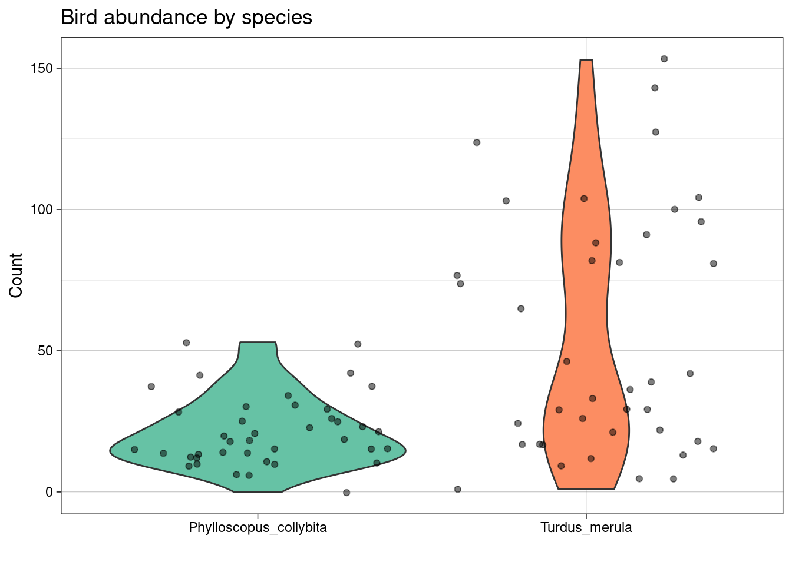

Logistic regression
We define a random variable, \(Y_i\), to have a binomial distribution if it is the number of successes from a number of independent trials, \(n\), each with the same probability of success, \(p\). It is a discrete distribution, which notes that the number of successes associated with the \(i^{th}\) observation must be an integer between \(0\) and \(n_i\). In addition, it builds in the non-constant variance of \(Y_i\) and \(\frac{Y_i}{n_i}\): \(\text{Var}(Y_i)=n_ip_i(1−p_i)\) and \(\text{Var}(\frac{Y_i}{n_i}) = \frac{p_i(1−p_i)}{n_i}\).
If we were to assume a linear relationship (as previously) that \(p_i = \alpha + \beta_1 x_i\) then we would be allowing \(p < 0\) and \(p>1\), which is not supported by the binomial distribution. So, we use a link function to map between \(p\) and the real number line:
\[\text{logit}(p_i) = \text{log}\left (\frac{p_i}{1 - p_i}\right ) = \alpha + \beta_1x_i.\] This leads to \[p_i = \frac{\exp(\alpha + \beta_1x_i)}{1 + \exp(\alpha + \beta_1x_i)}.\] and
\[Y_i \sim \text{Binomial}(n_i, p_i)\]
Interpreting coefficients
Recap, for probability \(p\) the odds are \(\frac{p}{1-p}\) and the log-odds are \(\text{log}\left (\frac{p}{1-p}\right )\):
- when \(p=0.5\) the odds \(=1\) and the log-odds \(= 0\)
- when \(p=1\) the odds \(\infty\) and the log-odds \(= \infty\)
- when \(p=0\) the odds \(=0\) and the log-odds \(= -\infty\)
Recall, for a linear regression model \(\mu = \alpha + \beta_1x\), when \(x=0\) \(y = \alpha\) and for every one-unit increase in \(x\), \(y\) increases by amount \(\beta_1\).
For a logistic regression model we have \[\begin{array}{rl} \text{logit}(p) = \alpha + \beta_1 x \\ \text{log}\left (\frac{p}{1-p}\right ) = \alpha + \beta_1 x \\ \text{log}\left (\text{odds}\right ) = \alpha + \beta_1 x \\ \end{array}\]
We can interpret this as when \(x = 0\), the log-odds of success are equal to \(\alpha\) and that for every one-unit increase in \(x\) the log-odds of success increase by \(\beta_1\). But, interpreting the effect of \(x\) on the log-odds of success is not straightforward.
Now, we have
\[\text{odds} = \text{e}^{ \alpha + \beta_1 x} = \text{e}^{ \alpha}(\text{e}^{\beta_1})^{ x}.\] This implies that
- when \(x = 0\) \(\text{odds} = \text{e}^{ \alpha}(\text{e}^{\beta_1})^{0} \text{e}^{ \alpha}\times 1 = \text{e}^{ \alpha},\)
- when \(x = 1\) \(\text{odds} = \text{e}^{ \alpha}(\text{e}^{\beta_1})^{1} = \text{e}^{ \alpha}\text{e}^{\beta_1} = \text{e}^{ \alpha + \beta_1},\)
- when \(x = 2\) \(\text{odds} = \text{e}^{ \alpha}(\text{e}^{\beta_1})^{2} = \text{e}^{ \alpha}\text{e}^{\beta_1} \text{e}^{\beta_1} = \text{e}^{ \alpha + \beta_1 + \beta_1},\)
- when \(x = 3\) \(\text{odds} = \text{e}^{ \alpha}(\text{e}^{\beta_1})^{3} = \text{e}^{ \alpha}\text{e}^{\beta_1} \text{e}^{\beta_1}\text{e}^{\beta_1} = \text{e}^{ \alpha + \beta_1 + \beta_1 + \beta_1},\) and
- so on …
Goodness-of-fit
Typically, we use logistic regression to model if we have a binary, or proportional response (e.g., success vs. failure). But, how do we assess if our choice was appropriate? Using the deviance?
Formally, we can test the null hypothesis that the model is correct by calculating a p-value using \[ p = \Pr(\chi^2_{n - k} > D).\]
Conditions of the chi-squared approximation
The distribution of the deviance under the null hypothesis is approximately chi-squared if the response of each observation is well approximated by a normal distribution. This holds for binomial random variables if the number of trials, \(n_i\), is large enough:
- when \(p_i\) is close to 0.5, \(n_i \geq 5\) is probably sufficient,
- but if \(p_i\) is close to 0 or 1, \(n_i\) must be much larger.
However, if our chi-squared approximation assumptions are not met we should find another way.
An example: lobsters
Let us, again, consider data from the published article Influence of predator identity on the strength of predator avoidance responses in lobsters..
The authors were interested in how a juvenile lobster’s size was related to its vulnerability to predation. In total, 159 juvenile lobsters were collected from their natural habitat in the Gulf of Maine, USA, and the length of each lobster’s carapace (upper shell) was measured to the nearest 3 mm, size. The lobsters were then tethered to the ocean floor for 24 hours. Any missing lobsters were assumed to have been consumed by a predator, while the surviving lobsters were released (i.e., survived = 1 if lobster survived, 0 otherwise).
library(tidyverse)
data <- read_csv("https://raw.githubusercontent.com/STATS-UOA/databunker/master/data/lobster.csv")
data
## # A tibble: 159 × 2
## size survived
## <dbl> <dbl>
## 1 42 0
## 2 36 0
## 3 51 1
## 4 33 0
## 5 33 1
## 6 45 1
## 7 54 1
## 8 48 0
## 9 39 0
## 10 48 1
## # ℹ 149 more rowsUngrouped model
Fitting a binomial model we specify family = "binomial" in our glm call. Note that the default link function for family = "binomial" is the logit link; we could also use the equivalent syntax binomial(link = logit)to specify this model.
glm_mod_ug <- glm(survived ~ size, family = "binomial", data = data)
summary(glm_mod_ug)
##
## Call:
## glm(formula = survived ~ size, family = "binomial", data = data)
##
## Coefficients:
## Estimate Std. Error z value Pr(>|z|)
## (Intercept) -7.89597 1.38501 -5.701 0.00000001191 ***
## size 0.19586 0.03415 5.735 0.00000000977 ***
## ---
## Signif. codes: 0 '***' 0.001 '**' 0.01 '*' 0.05 '.' 0.1 ' ' 1
##
## (Dispersion parameter for binomial family taken to be 1)
##
## Null deviance: 220.41 on 158 degrees of freedom
## Residual deviance: 172.87 on 157 degrees of freedom
## AIC: 176.87
##
## Number of Fisher Scoring iterations: 4The fitted model is therefore
\[ \log\left[ \frac { \widehat{P( \operatorname{survived} = \operatorname{1} )} }{ 1 - \widehat{P( \operatorname{survived} = \operatorname{1} )} } \right] = -7.896 + 0.196(\operatorname{size}) \]

Grouped model
The data are currently ungrouped, despite many lobsters sharing the same carapace size. Therefore, we rearrange the data set so that it is grouped:
grouped <- data %>%
group_by(size) %>%
summarise(y = sum(survived), n = length(survived), p = mean(survived))
grouped
## # A tibble: 11 × 4
## size y n p
## <dbl> <dbl> <int> <dbl>
## 1 27 0 5 0
## 2 30 1 10 0.1
## 3 33 3 22 0.136
## 4 36 7 21 0.333
## 5 39 12 22 0.545
## 6 42 17 29 0.586
## 7 45 13 18 0.722
## 8 48 12 17 0.706
## 9 51 7 8 0.875
## 10 54 6 6 1
## 11 57 1 1 1Where,
sizeis as above,yis the number of lobsters of each size that survived,tis the total number of lobsters of each size, andpis the proportion of lobsters of each size that survived.

Fitting a binomial model again we specify family = "binomial" in our glm call and specify our response as cbind(y, n - y):
glm_mod_gr <- glm(cbind(y, n - y) ~ size, family = "binomial", data = grouped)
summary(glm_mod_gr)
##
## Call:
## glm(formula = cbind(y, n - y) ~ size, family = "binomial", data = grouped)
##
## Coefficients:
## Estimate Std. Error z value Pr(>|z|)
## (Intercept) -7.89597 1.38501 -5.701 0.00000001191 ***
## size 0.19586 0.03415 5.735 0.00000000977 ***
## ---
## Signif. codes: 0 '***' 0.001 '**' 0.01 '*' 0.05 '.' 0.1 ' ' 1
##
## (Dispersion parameter for binomial family taken to be 1)
##
## Null deviance: 52.1054 on 10 degrees of freedom
## Residual deviance: 4.5623 on 9 degrees of freedom
## AIC: 32.24
##
## Number of Fisher Scoring iterations: 4The fitted model is again
\[ \log\left[ \frac { \widehat{P( \operatorname{survived} = \operatorname{1} )} }{ 1 - \widehat{P( \operatorname{survived} = \operatorname{1} )} } \right] = -7.896 + 0.196(\operatorname{size}) \]
Interpreting the coefficients
Interpreting the coefficients above we estimate that the log-odds of a juvenile lobster surviving are -8 (use your common sense to ascertain if interpreting the intercept is sensible).
We estimate that for every 1mm increase in carapace length the log-odds of a juvenile lobster surviving increase by 0.196.
What about the odds?
Therefore, we estimate that the odds of a juvenile lobster surviving are 0.000372 (use your common sense to ascertain if interpreting the intercept is sensible).
We estimate that for every 1mm increase in carapace length the odds of a juvenile lobster surviving are multiplied by 1.22.
What about for a 5mm increase in carapace length?
Therefore, we estimate that for every 5mm increase in carapace length the odds of a juvenile lobster surviving are multiplied by 2.66.
Using 95% confidence intervals:
Therefore, we estimate that for every 5mm increase in carapace length the odds of a juvenile lobster surviving are multiplied by between 1.94 and 3.81.
For a percentage-change interpretation we use \(100 \times \left (\text{exp}(x\beta_1)−1 \right )\):
100*(exp(5*coef(glm_mod_gr)[2]) - 1)
## size
## 166.2564
confint <- 100*(exp(5*confint(glm_mod_gr)[2, ]) - 1)
confint
## 2.5 % 97.5 %
## 94.44778 281.11670We estimate that for every 5mm increase in carapace length the odds of a juvenile lobster surviving increase by 166.26%. We estimate that for every 5mm increase in carapace length the odds of a juvenile lobster surviving increase between 94.45% and 281.12%.